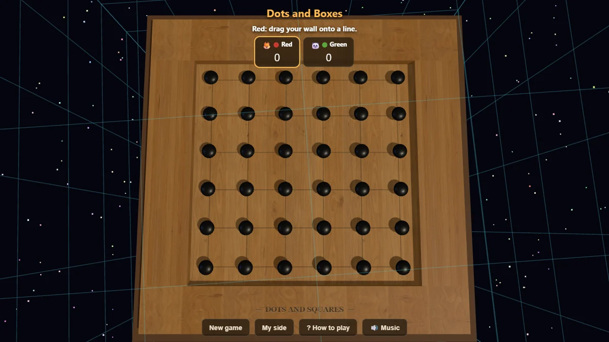
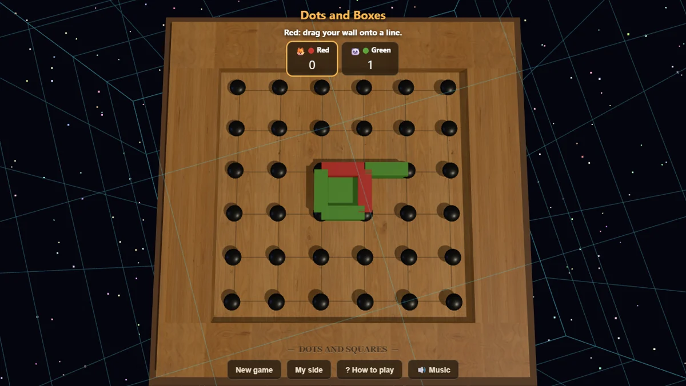

Dots and Boxes
Build walls, close boxes, and make your opponent think twice about the next wall.

Objective
Own more boxes than anyone else when every edge on the board has a wall. A completed box is worth one point. Tied scores share the result.
Board and pieces
Dots define the corners of a square grid. Each visible wall is one horizontal or vertical edge. A square filled with a player’s color shows who claimed it. Pick a 5×5, 7×7, or 10×10 board.
Taking a turn
Grab your wall and drag it onto an empty edge between two dots. A wall closes a box when it supplies the fourth side. You claim every box that closes on that move and play again. Otherwise play passes to the next player. A single wall can close two boxes.
Players and controls
Play against bots, change local seats to Human to share one device, or use Invite friends online for a shared table. The host starts once everyone is seated. Use My side to turn the camera toward your seat. Select ? for the guide and 🙂 for reactions in an online match.
Strategy
While safe moves remain, try to avoid drawing the third side. When forced to give away boxes, look several moves ahead. Compare giving up a short chain today with handing over a long chain later. Watch for a wall that closes two boxes.

Developer’s AI assistance philosophy
Kenneth Bingham conceived or adapted the games and directed their development. He gave AI explicit instructions about rules, interfaces, constraints and revisions, then reviewed playable builds and used the results to guide the next changes. AI assisted with implementation, assets and testing under that direction. The process starts with a human design decision and ends with checks against it.
Examples include specifying the supported-stack rule and 2×2×2 score in Cubicles, replacing Puzzle Maker’s turns with simultaneous cooperative and competitive play, and testing a complete 60-move online match in Dots and Boxes.
Credits and fair use
Based on the traditional pencil-and-paper game Dots and Boxes. Kenneth Bingham adapted it to a 3D board with wall pieces, bots and invite tables.
Game design, creative direction and AI instructions by Kenneth Bingham. Implementation and production assisted by AI. Third-party names and materials remain the property of their owners. References acknowledge fair use where applicable.